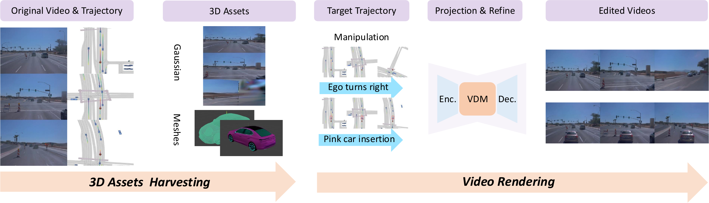

Controllable driving scene generation is critical for realistic and scalable autonomous driving simulation, yet existing approaches struggle to jointly achieve photorealism and precise control. We introduce HorizonForge, a unified framework that reconstructs scenes as editable Gaussian Splats and Meshes, enabling fine-grained 3D manipulation and language-driven vehicle insertion. Edits are rendered through a noise-aware video diffusion process that enforces spatial and temporal consistency, producing diverse scene variations in a single feed-forward pass without per-trajectory optimization. To standardize evaluation, we further propose HorizonSuite, a comprehensive benchmark spanning ego- and agent-level editing tasks such as trajectory modifications and object manipulation. Extensive experiments show that Gaussian-Mesh representation delivers substantially higher fidelity than alternative 3D representations, and that temporal priors from video diffusion are essential for coherent synthesis. Combining these finding, HorizonForge establishes a simple yet powerful paradigm for photorealistic, controllable driving simulation. achieving an 83.4% user-preference gain and a 25.19% FID improvement over the second best state-of-the-art method.
Overview of the HorizonForge framework. With original video and trajectory, we will firstly extract corresponding 3D assets according to the manipulated novel trajectories, then feed them into our rendering model for final generation results.
